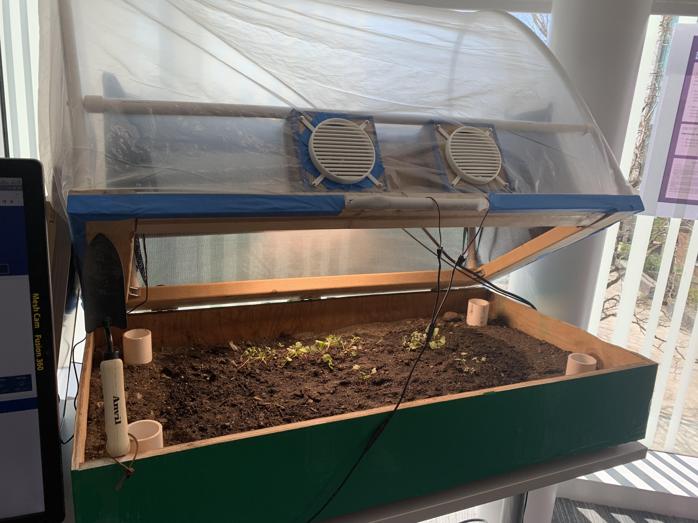

CAD & prototype preparation
3D modeling, concept development, fabrication-file preparation and iteration using SolidWorks, Autodesk Inventor and AutoCAD.
3D PRINTING & PROTOTYPING · CAD · PHYSICAL PRODUCT DEVELOPMENT
I’m Mike Dattolo, an Integrated Product Design graduate with hands-on experience supporting prototype builds, preparing fabrication files, and troubleshooting equipment. I help turn practical problems into physical prototypes and better products.
Hackettstown, New Jersey · Seeking a full-time role in additive manufacturing, prototyping, CAD, or physical product development.
SELECTED WORK

Co-authored prototype research exploring support-material alternatives and multi-axis printing as approaches to reducing waste.
Academic feasibility research →
Co-developed a foot-pedal pipetting concept with user and occupational-therapy input. Second place, JWU Sharkfest 2022.
Academic team project →
A multidisciplinary raised-bed project combining physical prototyping, environmental monitoring and design exploration.
Explore the project →WHAT I CAN CONTRIBUTE
3D modeling, concept development, fabrication-file preparation and iteration using SolidWorks, Autodesk Inventor and AutoCAD.
Hands-on prototype support, 3D printing, laser cutting, vinyl cutting and CNC file preparation.
Machine setup, adjustment, production support and practical troubleshooting in lab and manufacturing environments.
User support, equipment training, safety practices and clear documentation developed through technical roles.
NEXT STEP